Unofficial study solution; not an official GTU answer key. Answers have not been independently verified. English text reflows; source equations, diagrams and Gujarati retain their original appearance. Use Enlarge image to inspect them.
આ બિનસત્તાવાર અભ્યાસ ઉકેલ છે, સત્તાવાર GTU જવાબવહી નથી. PDF માંથી ગુજરાતી લખાણ સાચું નીકળતું નથી, તેથી દરેક જવાબ મૂળ ચિત્રરૂપે જાળવ્યો છે. વાંચવા માટે ચિત્ર મોટું કરો. મૂળ પ્રશ્ન અને પરીક્ષાના વિકલ્પોની સૂચનાઓ અનુસરો.
Coverage: all 28 printed parts, including every OR alternative, are answered in English and easy Gujarati. The paper is 70 marks; alternatives are not additional marks.
Question wording: the supplied English questions are reproduced with line breaks normalised. The Gujarati question meaning is a study aid, not a verbatim official translation; the paper states that English is authentic.
Diagrams and safety: sketches are schematic and not working drawings. Apply current standards and professional advice for materials, detailing and safety.
Status: study support based on the supplied paper, not an official GTU answer key. Original question papers remain unchanged in separate PDFs.
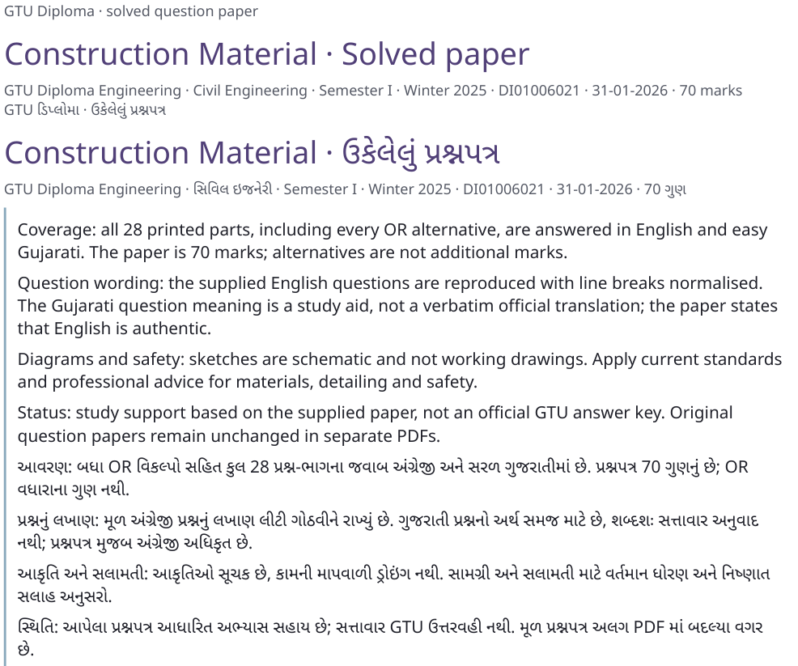
Question 1
Q1 · Brick cuts, stone and timber
Q.1 (a) · Define theTerm : ( 1) Queen Closer (2) Bats (3) King Closer · 3 marks
Queen closer: a brick cut lengthwise into two equal strips, each of full length and half width; it helps maintain bond at a quoin.
King closer: a brick with a triangular corner cut away, so one end is half-width and the other end remains full-width.
Bat: a piece obtained by cutting a brick across its length; a half bat has half the length and the full width.
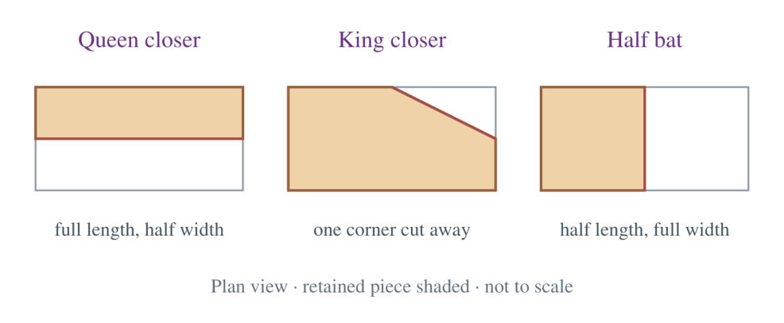
Plan view: the shaded piece is retained. Closer cuts help arrange the bond; drawings are schematic.
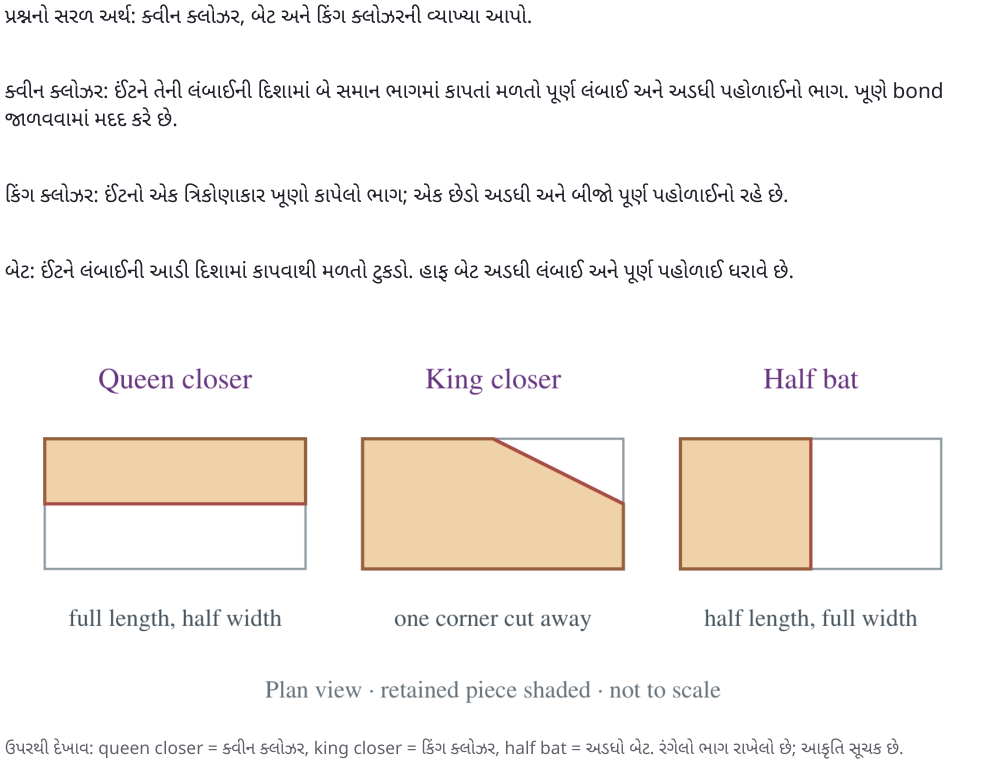
Q.1 (b) · State the Requirements of Good Building Stone. · 4 marks
A good building stone should have the following properties, suited to its intended use:
• Strength: sufficient resistance to the expected compressive load.
• Durability: resist weather, wetting, temperature change and the site environment.
• Structure: sound and reasonably uniform, without cracks, soft veins or cavities.
• Low absorption: relatively dense and non-porous for exposed work.
• Hardness and toughness: resist wear and impact where used in floors or roads.
• Workability and appearance: can be dressed economically and has a suitable finish and colour.
Q.1 (c) · Classify the Defects in Timber and Explain any three with figure. · 7 marks
Timber defects are faults that may reduce appearance, strength, durability or ease of use. They can be classified by origin:
• Growth / standing tree: knots, shakes and irregular grain.
• Seasoning: checks, splits and warping caused or aggravated by uneven drying.
• Conversion / handling: torn grain or saw marks from poor sawing or handling.
• Biological: fungal decay and damage by insects or termites.
Any three with sketches

Typical appearances of knot, checks and bow. Sketches are not to scale.
1. Knot: embedded base of a branch interrupts the straight grain; a large or loose knot may weaken timber and spoil the finish.
2. Check: a surface crack along the grain, commonly caused by the outer surface drying and shrinking faster than the inside. Deep checks can admit moisture.
3. Bow: lengthwise curvature of a board, often due to uneven shrinkage; it makes alignment and joining difficult.
Select sound timber, stack with aligned spacers, dry at a controlled rate, keep it dry in use and protect it as appropriate.
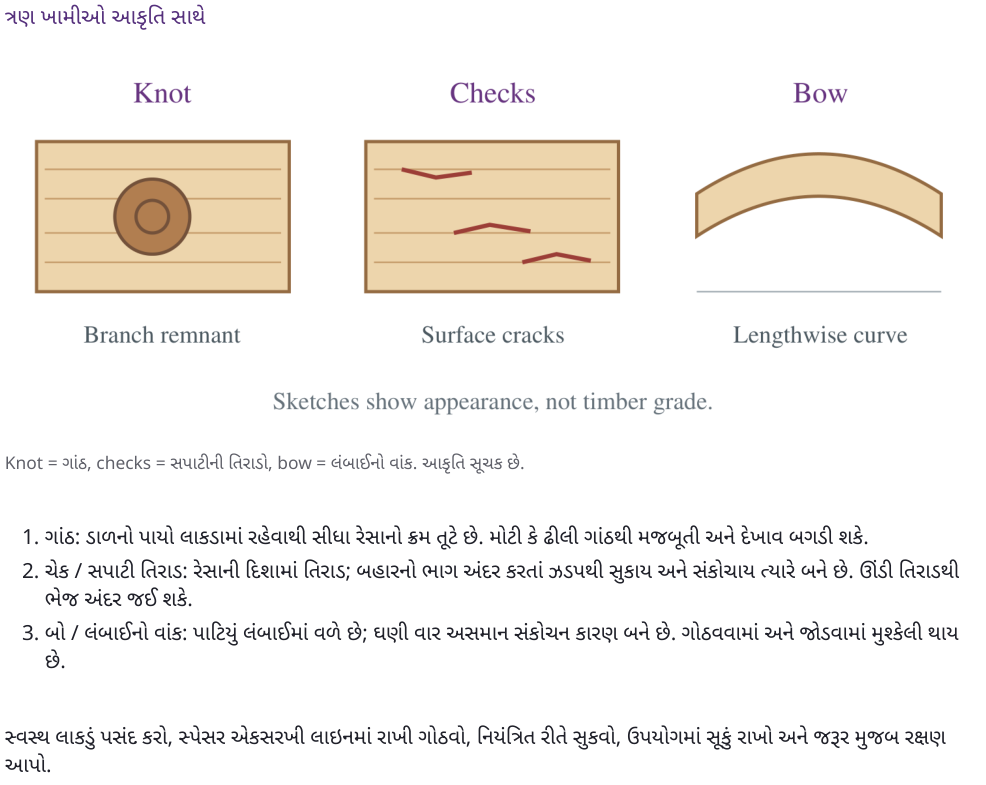
Q.1 (c) · Show Cross section of Exogenous tree and discuss about all its components. · OR · 7 marks
An exogenous tree grows mainly outward by the formation of new layers. Its transverse section is shown below:

Schematic cross-section; rings and radial rays are exaggerated for clarity.
• Pith: soft central core of the young stem.
• Heartwood: older inner wood; usually darker, comparatively durable and chiefly provides structural support.
• Sapwood: younger outer wood that conducts water and minerals from roots; it is generally more susceptible to decay than heartwood.
• Cambium: thin living growth layer between wood and bark that produces new wood inward and inner bark outward.
• Inner bark (phloem): carries prepared food through the living tree. Outer bark: protects the stem from the environment.
• Growth rings: visible layers formed by seasonal growth; in many climates a ring can represent a year, but growth conditions vary.
• Medullary rays: radial tissues used for lateral transport and storage.

Question 2
Q2 · Lime, construction materials and properties
Q.2 (a) · Define the Term for Lime : (1) Calcination (2) Slaking (3) Setting · 3 marks
Calcination: heat limestone sufficiently to decompose calcium carbonate into quicklime and carbon dioxide: CaCO3 → CaO + CO2.
Slaking: quicklime reacts with water to form hydrated lime, releasing heat: CaO + H2O → Ca(OH)2 + heat.
Setting: lime mortar develops rigidity after placing. Air lime hardens mainly by carbonation; hydraulic lime also sets by hydration of its hydraulic compounds.
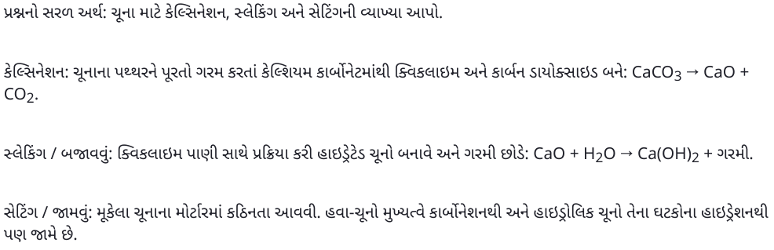
Q.2 (b) · Discuss about construction material used in Building Construction. · 4 marks
Buildings use different materials according to the function of each component:
• Stone and bricks / blocks: foundations, masonry walls and cladding, as suitable.
• Cement, sand and aggregate: mortar and concrete; reinforced concrete is used in slabs, beams, columns and foundations.
• Steel: reinforcement, structural frames, doors and connections; protect it against corrosion where required.
• Timber, glass and finishes: doors, partitions, windows, flooring, paint and waterproofing.
Select using load, exposure, local availability, cost and relevant standards.
Q.2 (c) · Explain about Mechanical Properties of Construction Material. · 7 marks
Mechanical properties describe how a material responds to load or deformation:
• Strength: resistance to failure under load; distinguished as compressive, tensile, shear or flexural strength.
• Elasticity: ability to regain original shape after unloading within the elastic range. Stiffness: resistance to elastic deformation.
• Plasticity: ability to undergo permanent deformation without immediate failure after yielding.
• Ductility: ability to undergo substantial plastic deformation in tension, as with suitable mild steel.
• Malleability: ability to be plastically shaped under compression, for example into sheets.
• Hardness: resistance to indentation or scratching; important for wearing surfaces.
• Toughness: ability to absorb energy before fracture; important under impact.
• Brittleness: tendency to fracture with little plastic deformation, as for ordinary glass.
Compare values from appropriate tests and standards; one property does not by itself establish fitness for a structure.
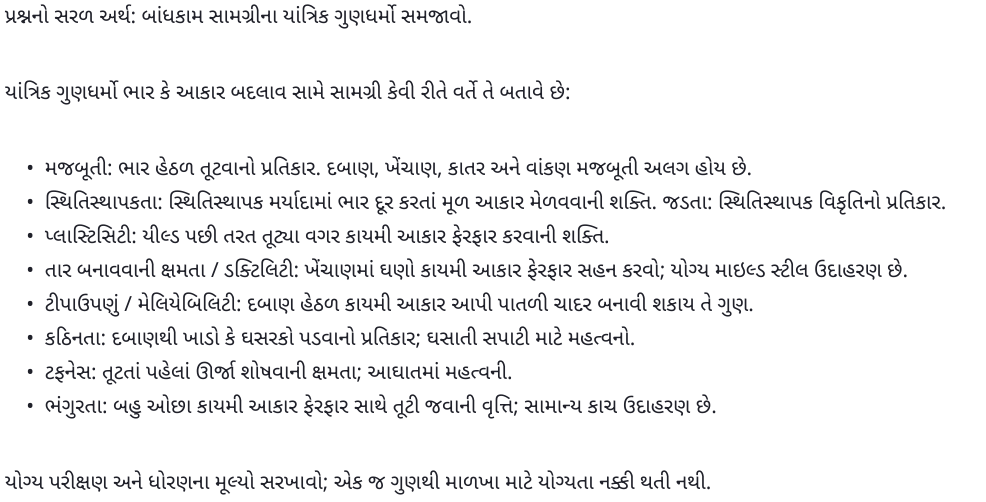
Q.2 (a) · Differentiate between Fine and Course Aggregate. · OR · 3 marks
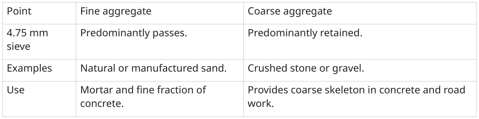
Sieve gradation has permitted tolerances; nominal sizes do not describe every particle.
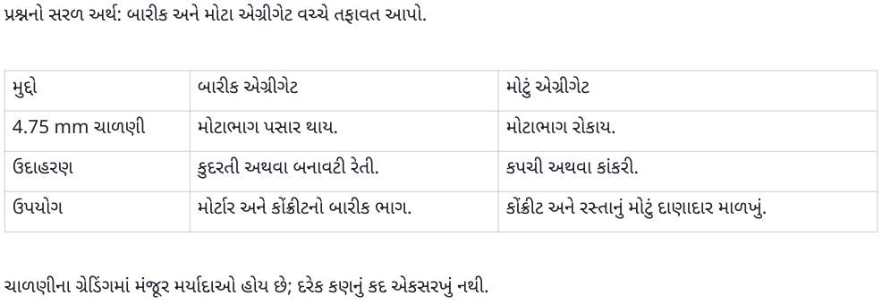
Q.2 (b) · Discuss about selection of Material based on Eco Friendly Nature. · OR · 4 marks
Select an eco-friendly material by comparing alternatives for the same intended performance:
1. Check strength, durability, fire and moisture requirements first; a short-lived material may need frequent replacement.
2. Compare embodied energy and emissions across extraction, manufacture, transport, use and end of life, using reliable product data when available.
3. Prefer suitable local, renewable, reused or recycled content when it actually reduces impacts; verify source and quality.
4. Consider indoor health, toxicity, water use, maintenance and reuse or recycling at end of life.
Example: tested fly-ash blended cement can reduce clinker demand, but design, curing and transport still matter.
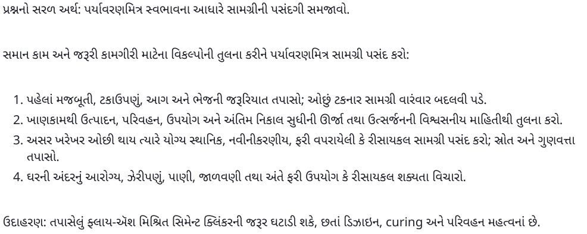
Q.2 (c) · Explain about Recycled Construction Materail. · OR · 7 marks
Recycled construction materials are recovered waste that is processed for a new construction use. Examples:
• Recycled concrete aggregate: crushed, cleaned demolished concrete used in suitable sub-base or designed concrete.
• Recycled steel: recovered reinforcement or sections melted and remade into new steel products.
• Recycled wood: suitable wood waste is chipped and processed into particleboard or fibreboard.
• Recycled glass or plastic: processed into suitable paving, panels or other products according to specifications.
Reclaimed bricks or timber used again with little processing are examples of reuse, which is related to but distinct from recycling. Sort and test contaminants, strength and durability before use; suitability is project-specific.
Process, benefits and precautions
1. Separate construction and demolition waste at source; remove wood, plaster, soil and other contaminants from the intended fraction.
2. Crush, screen and clean where required; measure grading, absorption and relevant strength or contamination properties.
3. Select the permitted use and design the mix or layer according to the relevant standard and project specification.
4. Record the source, test the finished work and monitor quality across batches.
• Can reduce landfill and demand for virgin aggregate or raw materials, subject to collection and processing impacts.
• Old concrete can have attached mortar and higher water absorption; adjust the tested mix, not an assumed universal replacement percentage.
• Recycled glass or plastic needs appropriate testing for chemical reactivity, fire, leaching and durability for the proposed use.
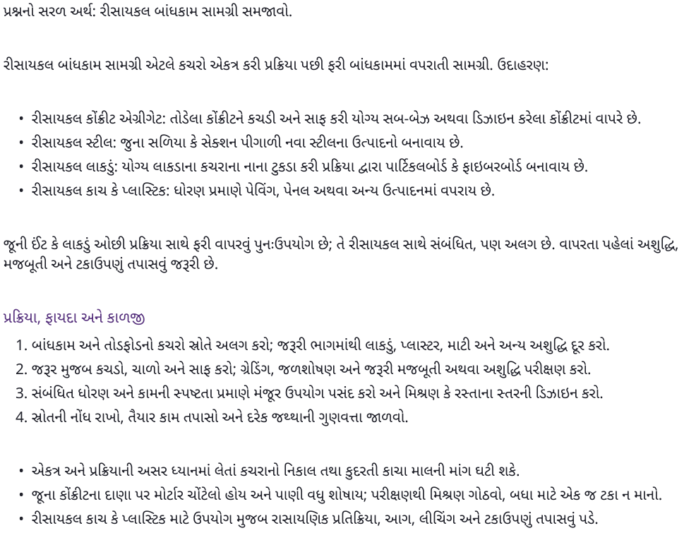
Question 3
Q3 · Fly ash, paint and timber seasoning
Q.3 (a) · Relate the Use of Fly ash in the Concrete. · 3 marks
Fly ash is a fine by-product collected from flue gases of suitable coal-fired power plants. In concrete, a tested grade can replace part of the cementitious material as a supplementary cementitious material.
• Its pozzolanic components react with calcium hydroxide in the presence of water and contribute to later binding products.
• A suitable mix may improve workability and long-term durability and reduce clinker demand and heat of hydration.
• Early strength may develop more slowly; proportion, curing and performance must be checked for the project and the relevant standard.
Q.3 (b) · State the Characteristics of good Paints. · 4 marks
A good paint should:
• Cover well and adhere firmly to the prepared surface.
• Spread and apply easily, forming a smooth, uniform film.
• Dry in a reasonable time without excessive cracking, peeling or blistering.
• Remain durable and resist the expected weather, moisture and wear.
• Retain colour and appearance reasonably well and be economical for the intended service.
• Be suitable for the substrate and comply with applicable health and environmental requirements.
Q.3 (c) · Define seasoning of Timbering.Give purposes of Seasoning.List out any four advantages of it. · 7 marks
Definition: seasoning is controlled removal of excess moisture from freshly cut timber to a moisture content suitable for its intended service, not removal of all water.
Purposes and advantages
• Reduce shrinkage and swelling after installation, improving dimensional stability.
• Reduce weight and make transport and handling easier.
• Generally improve strength and stiffness compared with green timber, for the same species and conditions.
• Allow better machining, joining, painting and adhesion of finishes.
• Lower moisture reduces the conditions favourable to fungal decay; it is not permanent protection against water or termites.
Methods
1. Natural air seasoning: stack boards above the ground under a roof, with aligned spacers and air passages. Dry slowly until suitable moisture is reached; weather limits the achievable dryness.
2. Artificial / kiln seasoning: circulate air in a kiln and control temperature, humidity and air speed. Monitor moisture and use a suitable schedule to reduce checks and warping.
3. Store the dried timber protected from rain and rewetting before use.
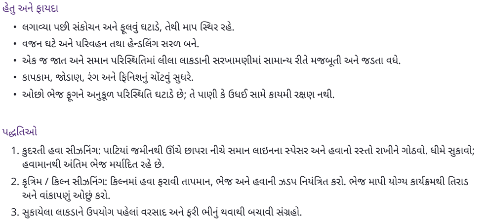
Q.3 (a) · Listout Components of Paints. · OR · 3 marks
Typical paint components and their functions:
• Binder: the film-forming part of the vehicle; it holds the film to the surface.
• Pigment / base: gives colour, opacity and sometimes protection; extenders modify body and properties.
• Solvent or thinner: adjusts application viscosity and leaves as the film dries, where used.
• Additives: small amounts of driers, stabilisers or other agents control selected properties.
Q.3 (b) · State the properties of Plaster of paris · OR · 4 marks
Plaster of Paris (POP) is mainly calcium sulphate hemihydrate, made by controlled heating of gypsum. Mixed with water it sets by forming gypsum again.
• A fine white powder that can be moulded and gives a smooth finish.
• Sets relatively quickly and develops a hard surface; small setting expansion can help reproduce details.
• Used for decorative mouldings, false ceilings and internal plaster finishes.
• Generally unsuitable for persistent damp or wet exposure unless a suitable protected system is specified; it is not a substitute for structural concrete.
Q.3 (c) · Describe about artificial seasoning of timber in detail. · OR · 7 marks
Artificial seasoning dries timber using controlled equipment rather than depending only on the weather. Kiln drying is a common method.
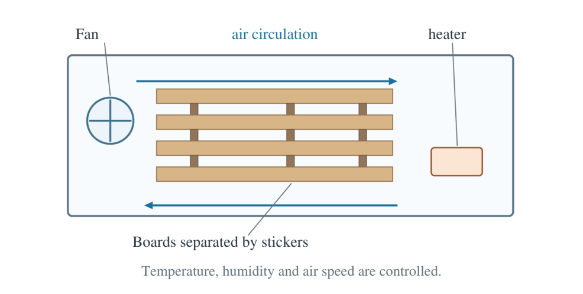
Schematic kiln: spacers allow heated air to circulate between boards.
1. Stack sawn boards on supports with dry, aligned stickers between layers; leave passages for air.
2. Place the stack in an enclosed kiln. Fans circulate air; heaters and humidity-control equipment maintain a schedule suitable for the species and thickness.
3. Begin gently to avoid rapid surface drying. Adjust temperature, relative humidity and circulation in stages while moisture is removed.
4. Measure moisture in representative boards. Continue to the specified service moisture; use equalising or conditioning when required to reduce moisture variation and drying stresses.
5. Cool and store under cover to prevent rewetting. A correct schedule reduces checking, splitting and warping.
Benefits and other methods
Kiln drying is faster and more controllable than open-air seasoning but uses energy and needs equipment and skilled operation. Other controlled methods include dehumidification, vacuum and electrical drying; their suitability and cost vary.
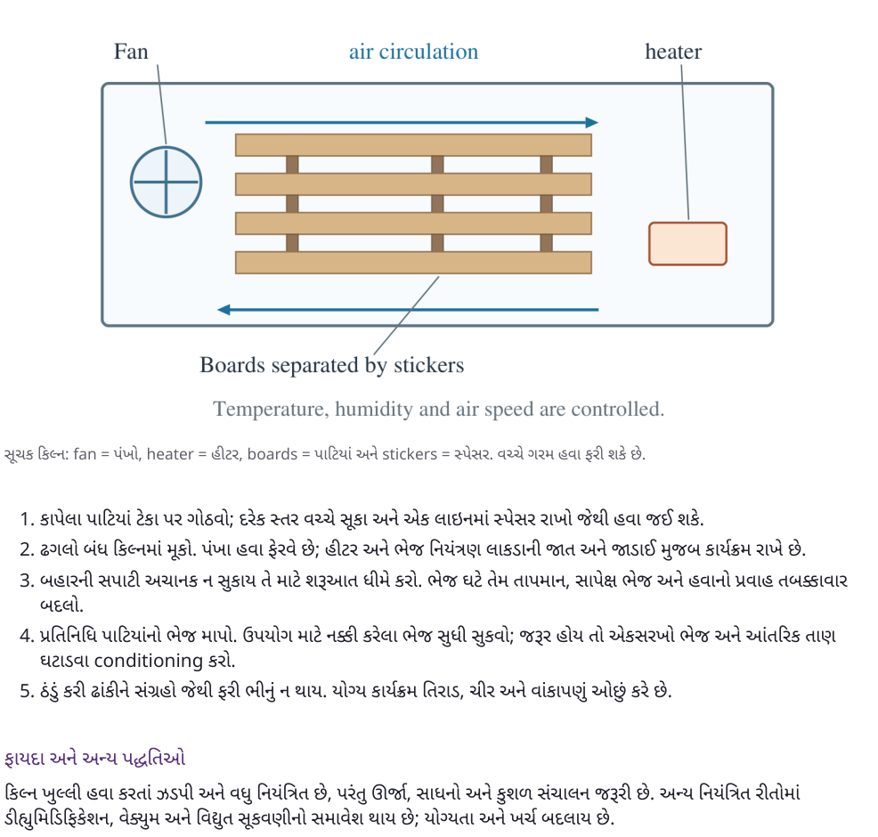
Question 4
Q4 · Plywood, fibres, kiln and waterproofing
Q.4 (a) · Describe the Advantages of Ply wood. · 3 marks
Plywood is made by bonding thin wood veneers, usually with the grain of adjacent layers at right angles.
• Cross-lamination improves dimensional stability and reduces splitting and warping compared with a similar single wood board.
• Available in large sheets, making partitions, furniture and formwork convenient.
• Good strength-to-weight and workable with common tools; properties vary by grade and direction.
• Choose adhesive and grade for the exposure: ordinary interior plywood is not automatically waterproof.
Q.4 (b) · Explain in brief about Jute Fibre & Glass Fibre. · 4 marks
Jute fibre: a natural plant fibre used in geotextiles, boards and fibre composites. It is renewable and biodegradable, but moisture, biological decay and alkaline exposure can reduce service life; choose suitable treatment and use.
Glass fibre: fine glass filaments provide tensile reinforcement in composites and are also used in insulation. They do not rust; cement products require the specified alkali-resistant glass and safe handling of fibres.
Q.4 (c) · Draw the neat sketch of Hoffman’s kiln and explain its working and its Advatages. · 7 marks
Principle: a continuous, moving-fire kiln recovers heat. The bricks remain stationary in a ring of chambers while the firing zone progresses around the ring.

Plan is schematic: air and hot gases move through the chambers; opened dampers direct exhaust to the common flue and chimney.
1. Construction: annular chamber divided into compartments, outer loading doors, roof fuel holes and flue connections with dampers; a chimney creates draught.
2. Loading and drying: dried green bricks are stacked with passages for air; doors are closed before firing.
3. Cooling and firing: fresh air enters through already fired hot bricks, cools them and becomes hot combustion air for the firing zone. Fuel is fed through roof holes.
4. Preheating: hot combustion gases continue into unburnt bricks, heating them before being drawn through an open damper to the flue and chimney.
5. Continuous cycle: shift fuel feed and dampers in sequence so the firing zone advances; unload cooled bricks and reload those chambers.
Advantages
• Heat recovery reduces fuel use compared with a simple clamp.
• Continuous, large-scale production with better temperature control and more uniform output.
• Hot bricks can cool while other chambers fire; loading and unloading continue in separate chambers.
Actual chamber arrangements and operating directions vary; the sketch indicates the path for one operating position.
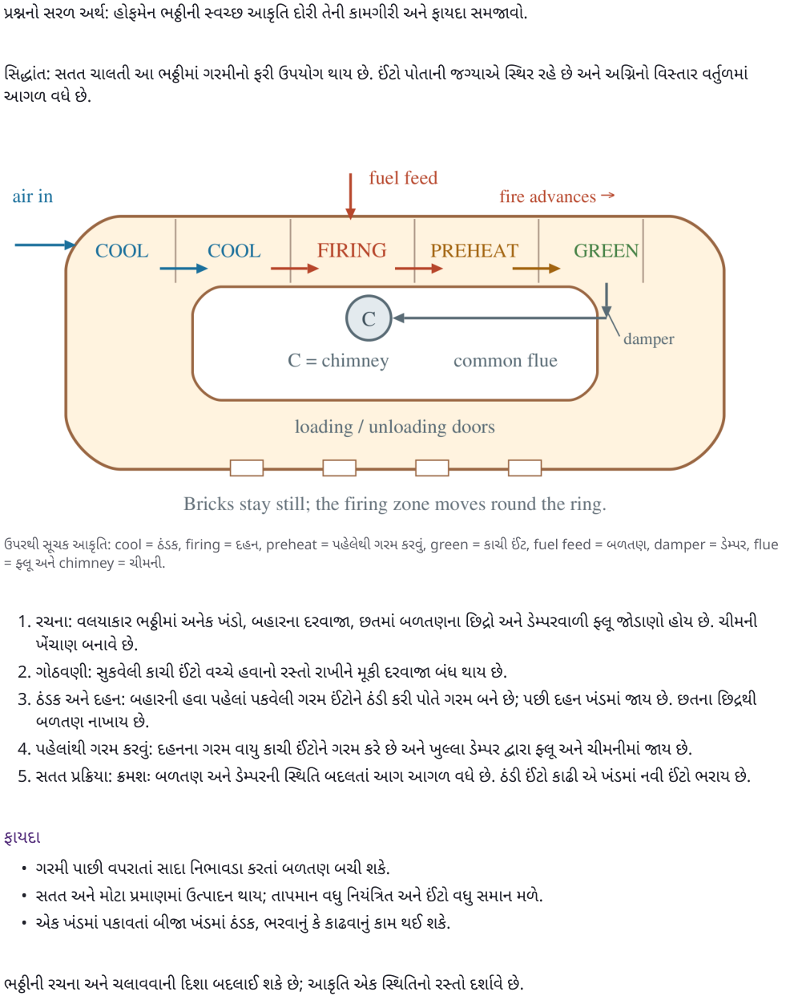
Q.4 (a) · List out properties of Glass. · OR · 3 marks
Common properties of glass:
• Usually transparent or translucent; can transmit light and be coloured.
• Hard and smooth but brittle; ordinary glass breaks with little plastic deformation.
• Impermeable to water and resistant to many chemicals; it is not resistant to every chemical.
• Can be moulded or made into sheets and fibres; thermal and impact resistance depend on the type and treatment.
• Electrical insulator under ordinary dry conditions.
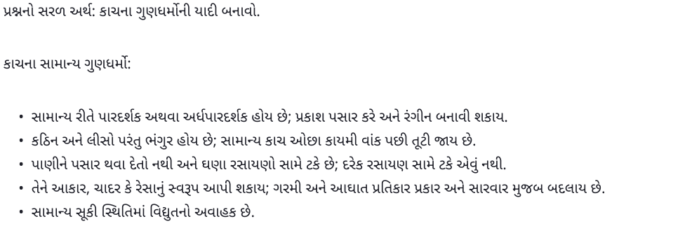
Q.4 (b) · Discuss on Water Proofing Material. · OR · 4 marks
Waterproofing materials resist passage of water through roofs, basements, wet areas or joints when used as part of a correctly detailed system:
• Bituminous membranes or coatings: continuous waterproof layers on suitable roofs or below- grade surfaces.
• Polymer sheets or liquid membranes: flexible barriers, chosen for exposure and substrate.
• Cementitious coatings: cement-based systems used on compatible masonry or concrete; movement capacity varies.
• Sealants and waterstops: treat joints, penetrations and construction joints; they complement rather than replace the main barrier.
Prepare the substrate, slope and drainage; make correct laps and protect the membrane. Hydrostatic pressure, joints and exposure require a specified design and product.
Q.4 (c) · Compare : Clamp Burning and Kiln Burning · OR · 7 marks
Both methods burn dried clay bricks, but their arrangements differ:
![Q.4 (c) OR: preserved source formula, table or diagram, page 23. Extracted text context (formula notation may be incomplete): Basis Clamp burning Kiln burning Arrangement Temporary stack of bricks and fuel, usually covered with earth or waste. Constructed chamber or structure with controlled draught. Operation Usually intermittent: load, burn, cool and dismantle. May be intermittent or continuous, depending on kiln type. Initial cost Low; suitable for smaller local works. Higher construction and equipment cost. Control Air supply and temperature are difficult to control evenly. Better regulation of air, fuel and firing temperature. Fuel / heat Heat recovery is limited; efficiency varies. Properly operated kilns, especially continuous kilns, recover more heat. Quality More variable; under- and over-burnt bricks may occur. Generally more uniform when correctly operated. Time / production Slow batch and lower capacity. Often higher output; continuous kilns reduce interruptions. Location Can be set up close to a small work site. Usually a fixed installation requiring skilled operation.](winter-2025.assets/0033.webp)
Cost, emissions and quality depend on design, fuel and operation; a kiln is not automatically efficient.
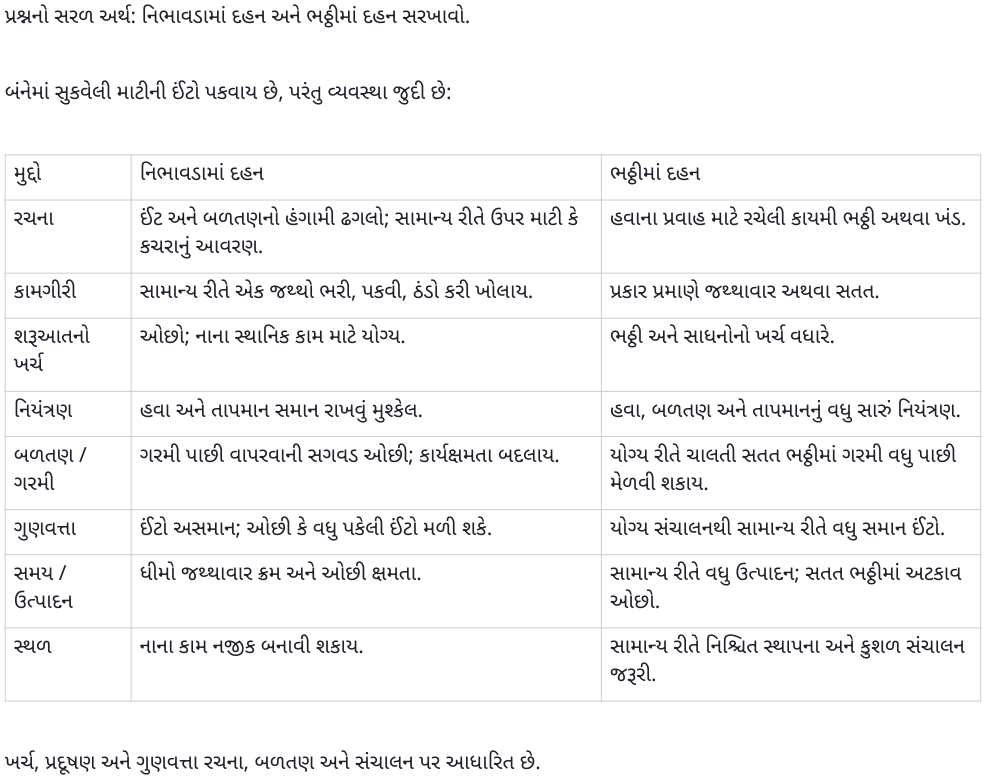
Question 5
Q5 · Termites, modern materials, moulding and cement
Q.5 (a) · Write short note: Anti Termite Treatment · 3 marks
Anti-termite measures combine building detailing, inspection and, where necessary, a permitted treatment:
1. Remove roots, timber scraps and other cellulose debris from the site; prevent timber from direct soil contact.
2. Provide drainage and repair leaks. Use appropriate barriers, seal service penetrations and keep inspection access.
3. Use naturally durable or properly preservative-treated timber where specified; inspect foundations and timber periodically.
4. For pre-construction or existing infestation, engage a qualified professional to assess and apply an approved physical or chemical system at the relevant soil, foundation and entry points.
Safety: follow current local law, approved product label and applicable standards. Do not choose or mix chemicals from an old textbook recipe; protect people, water sources and the environment.
Q.5 (b) · Describe the Material: (1) PUR (2) GGBS · 4 marks
1. PUR (polyurethane): rigid polyurethane foam is a lightweight cellular plastic with low thermal conductivity. It is used as roof, wall and cold-room insulation, often as boards or panels. Choose a suitable system and protective lining for fire, moisture and weather exposure.
2. GGBS (ground granulated blast-furnace slag): iron-making blast-furnace slag is rapidly cooled to granules, dried and ground. It is used in blended cement or as a supplementary cementitious material in concrete. A suitable mix can reduce clinker demand and improve later durability, although early strength may be slower.
Q.5 (c) · Explain about Moulding of Bricks in Datails. · 7 marks
Moulding gives tempered clay the required brick shape and size. Allowances are made for shrinkage during drying and firing.
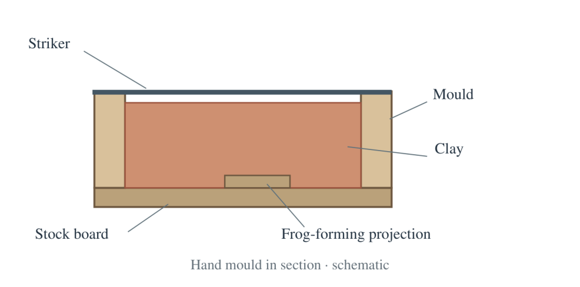
Hand moulding, schematic section: a projection on the stock board forms the frog indentation.
Hand moulding
1. Prepare and temper clay thoroughly. Clean the mould; use sand or water to prevent sticking, according to the method.
2. Set the mould on level ground or a stock board. Throw a properly sized lump of clay into the mould and press it into the corners.
3. Strike off excess clay with a straight striker or wire. The stock-board projection can form the frog.
4. Lift the mould carefully, leaving the green brick on prepared ground, or transfer it on a pallet in table moulding. Repeat and dry the bricks before burning.
Methods
• Ground moulding: the mould is placed on prepared level ground and lifted, leaving the brick in place for drying.
• Table moulding: moulding is carried out on a table or stock board, giving better control and comfort.
• Machine moulding: tempered clay can be extruded as a continuous column and wire-cut, or pressed in individual moulds; suitable for larger production.
Good moulding produces full corners, uniform size and a smooth surface without trapped voids.
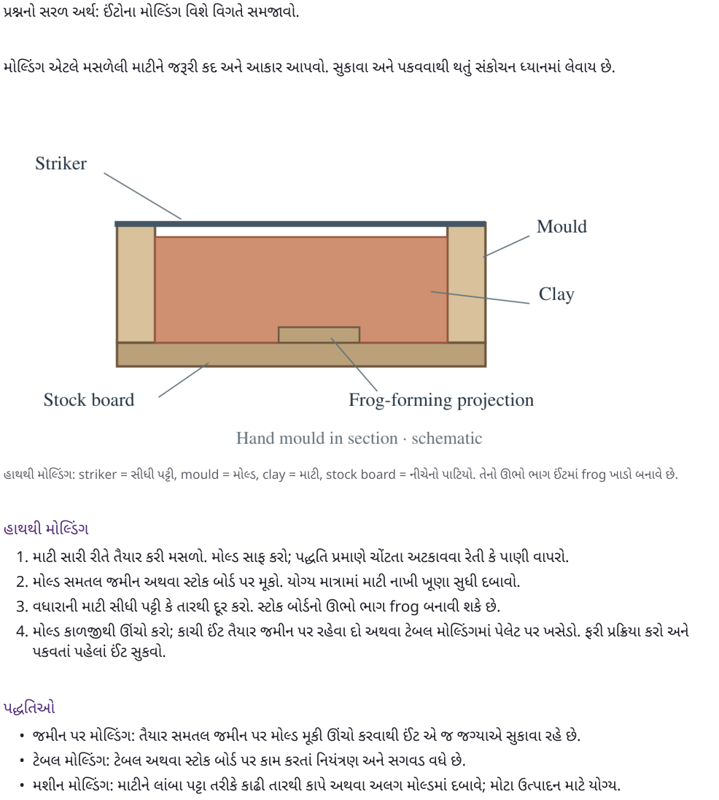
Q.5 (a) · Discuss about Sound insulating Material. · OR · 3 marks
Sound insulation reduces sound passing between spaces; sound absorption mainly reduces reflections and echo inside a room. They are related but not the same.
• Dense masonry or concrete: mass helps reduce airborne sound transmission when joints are sealed.
• Mineral wool or glass wool: absorbs sound in a lined cavity and improves a properly detailed double wall or ceiling.
• Resilient layers / acoustic underlay: can reduce impact-sound transmission when floors and connections are designed for it.
• Acoustic panels: porous or perforated products reduce room reverberation; by themselves they may not soundproof a wall.
Seal gaps and limit rigid sound bridges; performance depends on the whole assembly and its installation.
Q.5 (b) · Describe the Material: ( 1) Polystyrene foam (2) Agro waste Material · OR · 4 marks
1. Polystyrene foam: expanded (EPS) or extruded (XPS) cellular plastic is lightweight and has low thermal conductivity. It is used for thermal insulation in roofs, walls and floors. Protect the chosen product from fire, UV and moisture as specified; EPS and XPS have different properties.
2. Agro-waste materials: agricultural residues such as rice husk, bagasse and straw can be processed into ash, boards or panels. Suitable tested rice-husk ash can be a pozzolanic addition; compressed-fibre boards may be used for partitions or insulation. Control moisture, biological deterioration and fire, and verify product quality.
Q.5 (c) · Shaw any seven name of cement v/s its uses. · OR · 7 marks
![Q.5 (c) OR: preserved source formula, table or diagram, page 29. Extracted text context (formula notation may be incomplete): Cement type Typical use 1. Ordinary Portland cement (OPC) General reinforced concrete, masonry and ordinary construction. 2. Portland pozzolana cement (PPC) General concrete and masonry; suitable mass or hydraulic works where specified. 3. Portland slag cement (PSC) Concrete and marine or aggressive-exposure work where the designed mix is suitable. 4. Rapid-hardening Portland cement Precast units or repairs requiring higher early strength; rapid hardening is not the same as quick setting. 5. Low-heat Portland cement Large concrete pours such as mass-concrete dams where heat rise must be controlled. 6. Sulphate-resisting Portland cement Foundations or concrete exposed to sulphate-bearing soil or groundwater when specified. 7. White Portland cement Architectural finishes, tiles and decorative work.](winter-2025.assets/0043.webp)
Use the relevant standard, exposure class, mix design and curing requirements; no cement automatically makes concrete durable.
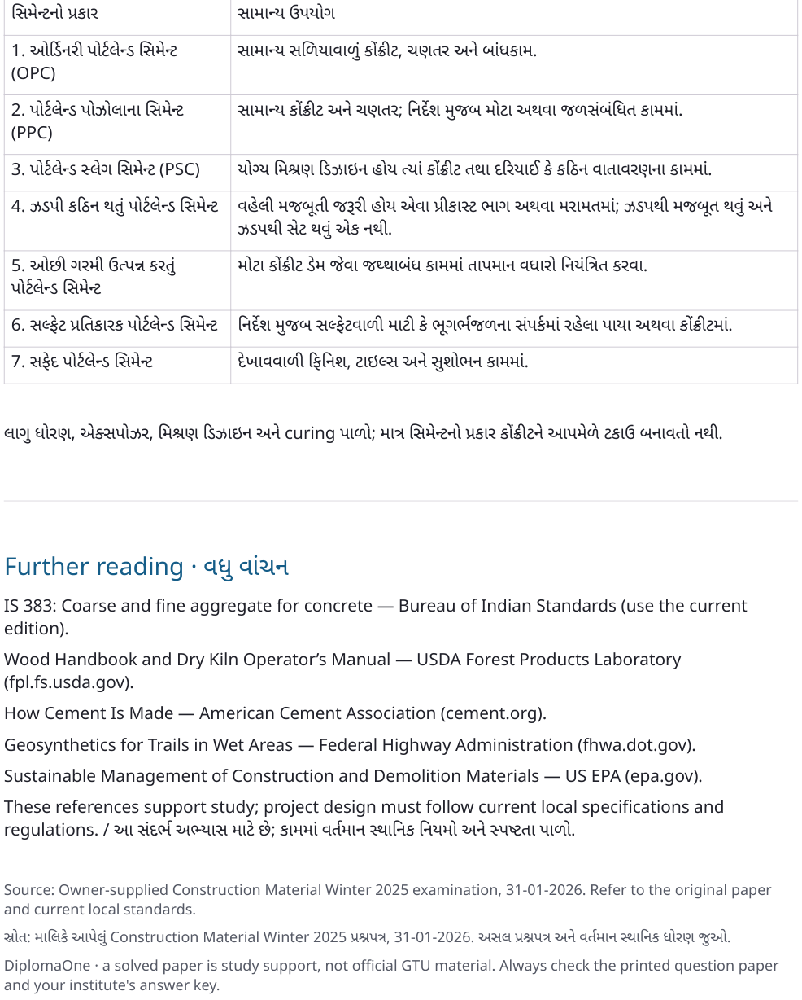